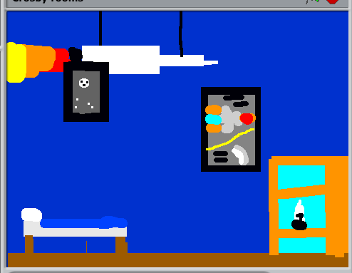
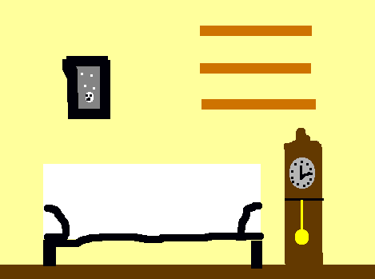
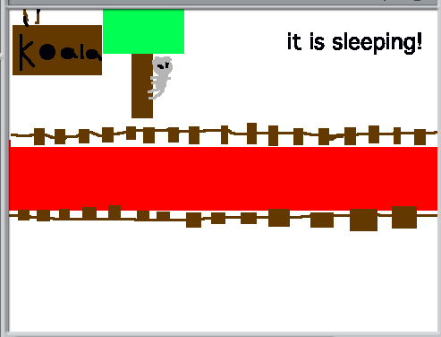

Teaching Point
Students will learn how to use the Shapes Tool to draw in their game..
The Shapes Tool
It's very easy to make nice, neat backgrounds for games if you use the shapes tool. Almost anything that you can think of that can go into a background or room is made of shapes. Take a look at these picturs. What shapes do we see here?
  Using the shapes tool also makes it easy to make backgrounds quickly. We can make a whole room in a short amount of time.
For harder shapes, use the line tool with the fill tool.
What objects can you think of to put in your background. What shapes might be the right shapes to make them.
Today's Assignment
Use the shapes tool to make the rooms for your mansion.
Extra Credit
Use the line and fill tools to make more complicated objects for your room.
Back to School Portal